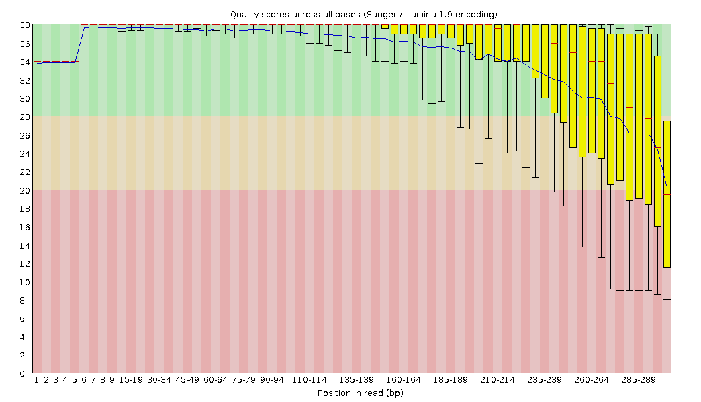

美吉生物
您身边的测序专家
帮助
数据质控
样本信息统计
样本碱基分布
样本的reads长度分布
OTU聚类
OTU表格
OTU Venn分析
pan-OTU and core-OTU
OTU组分图
Alpha多样性研究
多样性指数多样化展示
稀释性曲线
Rank-AbundanRce曲线
OTU物种累积曲线
beta多样性研究
距离矩阵及可视化
多元分析及可视化
丰度差异分析
丰度差异可视化
Ternary三元相图
Lesfe分析
选择样本：
名称1
名称2
名称3
确定
结果输出区域

-显示方式-
箱线图
折线图
选择颜色方案
方案一
方案二
显示数值
保存图片